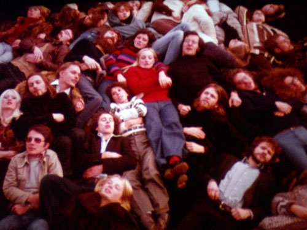

| < | > |
| Lagado | [2004-12-06 23:05] |
| We have Rafael here from Mexico, staying with us while he works with João, editing a new video piece. Here we are on our belovéd night walk around the Serpentine. Tonight we went to a couple of Werner Nekes films at the Goethe Institute.  It's frustrating but rewarding to see these old things from the past. I'm glad I can remember the free, playful feeling of those days. |
|